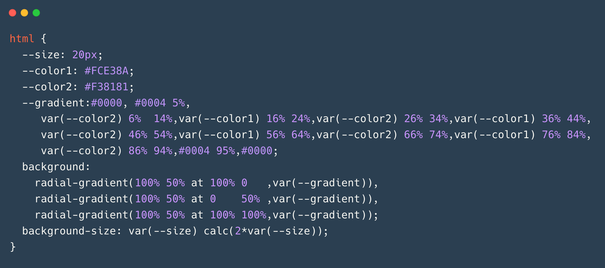
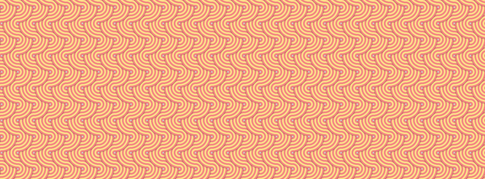

É incrível o que o CSS pode fazer atualmente, e temos uma demonstração divertida de padrões de fundo criados com
CSS puro para você. Este exemplo é um pouco mais avançado, usando variáveis CSS e múltiplos
radial-gradient, mas eles são fáceis de dominar com um pouco de prática.
Se você experimentar este código, recomendamos brincar primeiro com as variáveis de tamanho e cor, pois elas rapidamente fornecerão novos padrões variados.
Código 
Imagem 
radial-gradient: Para criar efeitos visuais interessantes.
Variáveis CSS:
:root {
--color1: #ff9f43;
--color2: #ff6b6b;
--size: 50px;
}
Radial Gradients:
background: radial-gradient(circle, var(--color1), var(--color2));
Combinação de múltiplos gradientes:
radial-gradient podem ser sobrepostos para criar efeitos complexos.background:
radial-gradient(circle at 25% 25%, var(--color1), transparent),
radial-gradient(circle at 75% 75%, var(--color2), transparent);
--color1, --color2
etc.).--size) para ver como o padrão se comporta.Aqui está um exemplo de código para criar um padrão de fundo com CSS:
:root {
--color1: #ff9f43; /* Cor 1 */
--color2: #ff6b6b; /* Cor 2 */
--size: 50px; /* Tamanho do padrão */
}
body {
background:
radial-gradient(circle at 25% 25%, var(--color1), transparent),
radial-gradient(circle at 75% 75%, var(--color2), transparent);
background-size: var(--size) var(--size);
height: 100vh;
margin: 0;
}
Aqui está um resumo organizado para você consultar:
O que é?
Técnicas utilizadas
radial-gradient: Para criar efeitos visuais interessantes.Como funciona?
:root {
--color1: #ff9f43;
--color2: #ff6b6b;
--size: 50px;
}
radial-gradient para criar gradientes circulares:
background: radial-gradient(circle, var(--color1), var(--color2));
background:
radial-gradient(circle at 25% 25%, var(--color1), transparent),
radial-gradient(circle at 75% 75%, var(--color2), transparent);
Como experimentar?
--color1, --color2).--size).Exemplo de Código
:root {
--color1: #ff9f43;
--color2: #ff6b6b;
--size: 50px;
}
body {
background:
radial-gradient(circle at 25% 25%, var(--color1), transparent),
radial-gradient(circle at 75% 75%, var(--color2), transparent);
background-size: var(--size) var(--size);
height: 100vh;
margin: 0;
}
linear-gradient,
conic-gradient e outras funções CSS.